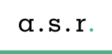

Bereken uw hypotheek
Hoe rekenen we?
De calculator gebruikt de leennormen van 2026 voor een annuïteitenhypotheek. We kijken naar uw structurele bruto inkomen en trekken de toetslasten van schulden af. Betaalde partneralimentatie verlaagt het toetsinkomen. Bij volledige renteaftrek telt de wettelijke verhogingsfactor voor DUO mee.
Krijgt u binnen tien jaar AOW? Dan gebruiken we voor elke periode het bijbehorende toetsinkomen en de leennormen die bij uw AOW-situatie horen. De laagste leenruimte bepaalt de indicatie. We rekenen beide perioden door met de oorspronkelijke lening en looptijd. Een geldverstrekker kan toekomstige aflossingen en maatwerk voor senioren meewegen.
Zonder gegevens over een woning berekenen we geen woningwaarde, energielabelruimte of aankoopbudget. Eigen geld, overwaarde, overbrugging en maatwerk voor senioren vallen buiten deze indicatie. Uw invoer blijft in uw browser.
Tijdelijke regeling hypothecair krediet 2026 · AFM over hypotheeklasten · NHG over AOW en maatwerk
Bekijk rente, aflossing en resterende schuld
| Jaar | Resterende schuld | Totaal betaalde rente |
|---|
Dit schema rekent met dezelfde rente voor alle 30 jaar. Uw rente kan na 10 jaar wijzigen.
Waarom we voor a.s.r. hebben gekozen
VermogenKompas heeft de ASR Hypotheek gekozen vanwege de mogelijkheden om extra af te lossen, uw rente mee te nemen bij een verhuizing en uw renteopslag te verlagen. Die voorwaarden zijn relevant als u uw schuld vóór uw pensioen wilt verlagen of later kleiner wilt wonen.

-
10% extra aflossen
U mag elk kalenderjaar tot 10% van het oorspronkelijke bedrag per leningdeel extra aflossen zonder vergoeding.
-
Uw rente meenemen
Hebt u al een hypotheek bij a.s.r.? Dan kunt u bij verhuizing onder voorwaarden uw rente en resterende rentevaste periode meenemen.
-
Uw rente kan dalen
Als aflossen u in een lagere risicoklasse brengt, verlaagt a.s.r. uw rente automatisch.
Bekijk de voorwaarden per situatie
Extra aflossen
De 10% komt boven op uw gebruikelijke aflossing. Aflosruimte die u overhoudt, vervalt aan het einde van het kalenderjaar. Wilt u meer aflossen? Dan kan a.s.r. een vergoeding rekenen.
In sommige situaties kunt u meer aflossen zonder vergoeding. Dat kan bijvoorbeeld op de laatste dag van uw rentevaste periode of als u uw woning vrijwillig verkoopt en de hele lening volgens de voorwaarden terugbetaalt.
Verhuizen of tijdelijk twee woningen
U kunt uw rente meenemen tot het bedrag dat nog openstaat per leningdeel. De einddatum van uw rentevaste periode blijft gelijk. Bij een andere risicoklasse of een wijziging in Nationale Hypotheek Garantie (NHG) kan de rente veranderen. Voor het bedrag dat u extra leent geldt de actuele rente.
a.s.r. beoordeelt de nieuwe hypotheekaanvraag opnieuw. Hebt u uw oude hypotheek al afgelost na verkoop? Dien uw aanvraag dan uiterlijk zes maanden na de aflossing in. Voor de Levensrente hypotheek en de Verduurzamingshypotheek geldt deze verhuisregeling niet.
Zit uw overwaarde nog in uw oude woning? Met een overbruggingshypotheek kunt u die tijdelijk voorfinancieren. De looptijd is maximaal twaalf maanden bij bestaande bouw en maximaal vierentwintig maanden bij nieuwbouw. U betaalt rente en lost de lening af uit de verkoopopbrengst van uw oude woning.
Een lagere schuld of hogere woningwaarde
De verhouding tussen uw schuld en de woningwaarde bepaalt uw risicoklasse. Na aflossing controleert a.s.r. maandelijks of u in een klasse met een lagere renteopslag valt.
Is uw woning meer waard geworden? Dan moet u de hogere waarde zelf aantonen met een waardebepaling die a.s.r. accepteert. Bij NHG of de laagste risicoklasse is er geen renteopslag die verder kan dalen.
Overlijden of uit elkaar gaan
Na het overlijden van iemand die aansprakelijk is voor de lening, kan de hypotheek binnen twaalf maanden geheel of gedeeltelijk zonder vergoeding worden afgelost. De achterblijvende partner kan onder voorwaarden overstappen naar de actuele marktrente. a.s.r. moet het verzoek hiervoor binnen twaalf maanden na het overlijden ontvangen.
Gaat u uit elkaar en blijft één van u in de woning? a.s.r. beoordeelt of diegene de hypotheek kan dragen. De vertrekkende partner is pas van de aansprakelijkheid af als a.s.r. daarmee instemt. Bij verkoop kan maximaal één van u de rente meenemen, met schriftelijke toestemming van de ander.
Uw rente aanpassen en mogelijke kosten
a.s.r. biedt geen rentemiddeling aan. U kunt soms wel tussentijds een nieuwe rente kiezen. Bij een vaste rente kunnen administratiekosten en een vergoeding voor misgelopen rente gelden. Een variabele rente omzetten naar een vaste rente kan kosteloos.
Zet de eenmalige kosten naast de mogelijke besparing voordat u een nieuwe rente kiest.
Dit overzicht gaat over de ASR Hypotheek. Voor andere of oudere producten kunnen andere afspraken gelden. Uw bindend aanbod, hypotheekakte en bijbehorende voorwaarden zijn leidend. Bronnen geraadpleegd op .
Wat betekenen deze voorwaarden voor u?
Bereid een kennismaking voor over uw woonwensen en hypotheek, nu en richting uw pensioen.